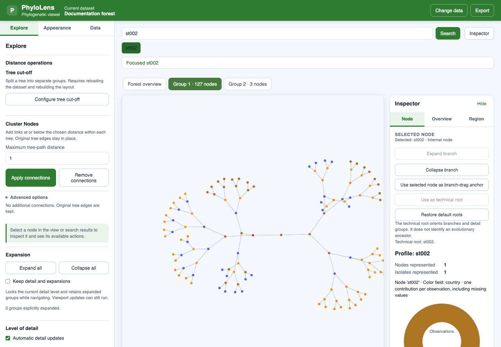

Technical roots
Choose a technical root to set the starting point for branch navigation. This changes which nodes are treated as parents and descendants, so branch folding and detail groups can change.
Choose a root#
- Select an ordinary node in the display or locate it using search.
- In Selected node, choose Use as technical root.
- Wait for the updated detail groups to load.
Only the selected node's component changes root. If the node is inside a detail group, expand the group first. Group representatives cannot be selected as technical roots.

What changes#
The tree keeps every original node, connection and distance. Coordinates and ancillary observations are preserved. PhyloLib inference and the global layout are not run again.
Parent links, depths, subtree membership and detail groups are recalculated. The active component and camera are retained. Manual folds, expanded groups and additional distance connections are cleared when the new root is applied. Automatic relaxation stops and dragging returns to individual nodes. You can apply these controls again.
Small components may look unchanged because their nodes remain at the same coordinates. Their branch orientation still changes.
Interpretation. Selecting a technical root does not identify an evolutionary ancestor or alter the evidence used to infer the tree.
Restore the defaults#
Choose Restore default roots to restore the original preparation roots for every component. Newick defaults follow the input serialization. Typing defaults follow the configured goeBURST LV ranking. Loading new input establishes new defaults.
The separate branch-drag anchor determines how branches move during dragging. It does not change the technical root.
Relationship to PHYLOViZ#
PHYLOViZ's desktop goeBURST viewer includes a Set as founder control. Its implementation gives the selected profile priority in edge ranking and repeats spanning-tree edge selection. It can therefore choose different tree connections.
PhyloLens technical rerooting preserves the existing connections. It provides a new starting point for rooted navigation and LoD. These operations should not be treated as identical PHYLOViZ behavior.
See the PHYLOViZ Founder control and edge-selection implementation. Service persistence, API semantics and computational costs are described in the technical-root reference.